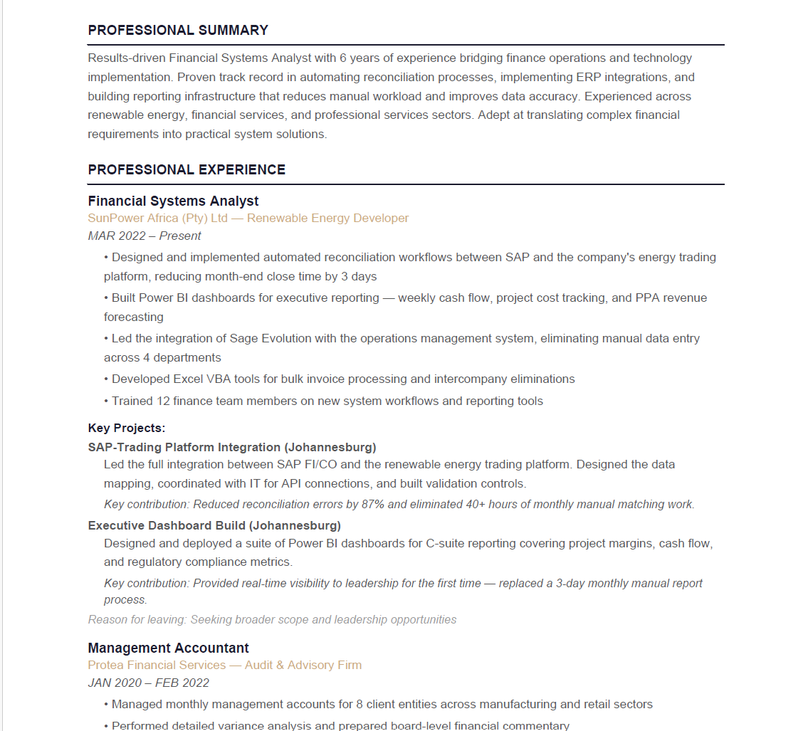
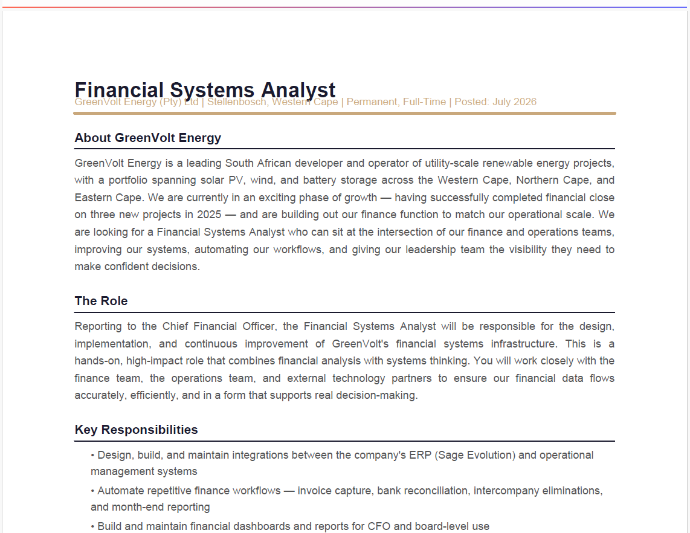
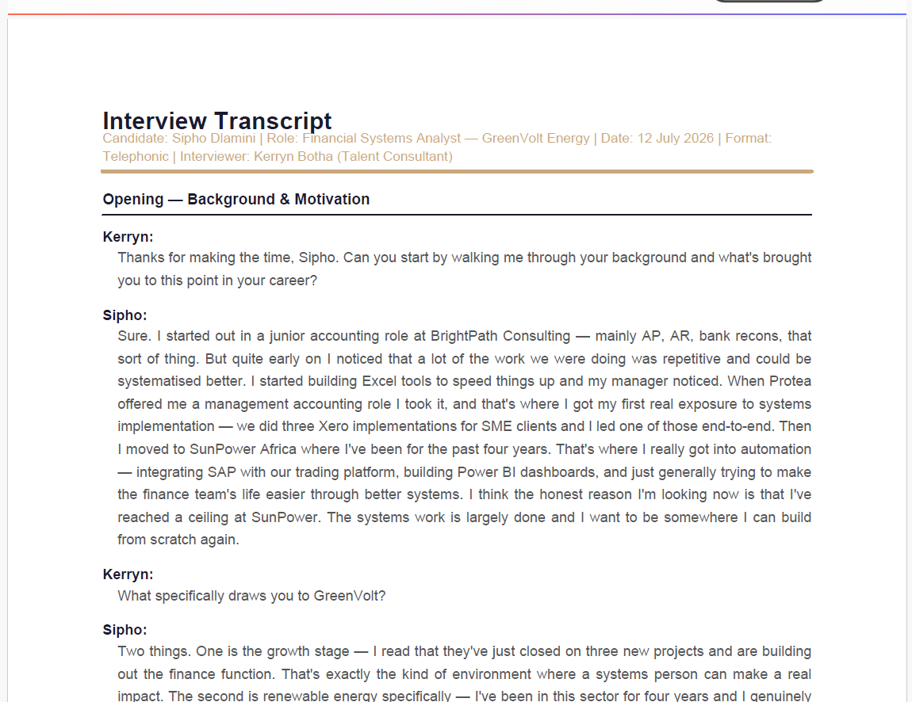

A recruitment agency's operating system built around the candidate journey.
Recruitment agencies lose hours every day doing the same thing manually — reading CVs, reviewing job descriptions, recalling interview notes, and building candidate profiles from scratch. This case study shows what happens when that entire process becomes a connected operating system: one input, one structured process, one professional output — automatically.
The problem
A recruitment agency was manually processing every candidate across three disconnected sources — the candidate's original CV, the job description from the client, and notes from the interview. Each one lived in a different place. Every candidate profile was built from scratch by a consultant, taking hours to days of high-skill time on low-value work.
Original CVs arriving in emails, inconsistent formats, varying quality
Job descriptions stored in Google Drive, disconnected from the candidate record
Interview notes in personal documents, never structured or searchable
Hours to days per candidate spent reformatting, evaluating and building the client-ready profile
The original CV — raw, unformatted
Before
Job description

Interview transcript

"Three sources of truth. No single system. The consultant had to hold it all in their head and rebuild everything manually."
THE BOTTLENECK THIS SYSTEM SOLVESHow the system works
Every step in the process — from intake to branded output — happens inside one connected system. Here is exactly how it works.
The bigger picture
The architecture built here — form capture, monday.com as the central record, AI applied at a specific step, branded document output — is the same architecture that works across every industry. The inputs and outputs change. The system logic does not.
What looks like a candidate profile generator is actually a demonstration of how any business process that currently runs on people, emails and spreadsheets can be turned into a connected, consistent, visible operating system.
Recruitment
CV + JD + Transcript → Branded candidate profile in monday.com
Accounting
Client data + Transactions → Branded financial statement, automatically
Real Estate
Property data + Client brief → Branded property pack, on demand
Legal
Matter details + Precedents → Structured contract or compliance pack
Any industry
Your inputs → Your process → Your branded output, systematically
The outcome
That is what a system gives you. Not just time saved — certainty. Every candidate handled the same way. Every profile looking the same. Every consultant following the same process. Without anyone having to remember, remind or redo.
of manual work per candidate — eliminated
to review, approve and send the output
manual formatting or copy-paste — ever
consistent brand on every profile sent to clients
Work with us
That is the conversation to start. A strategy call maps out what a Business Operating System would look like for your specific business — and whether it is the right investment.